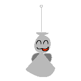

|

|

Cerise Catacombs
Introduced 18 March 2026
General Information:
The Cerise Catacombs are a secondary setting of Colormill. They are a series of dungeons and vaults that exists underneath Cerise. The setting functions both as a residential area and a network of ossuaries.
The Cerise Catacombs are populated by different kinds of creatures that are outcasted from the direct overworld (Cerise). It is also a meeting hub for newly disembodied spirits that travel in and out of the area.
Associated Characters:
Nana's distant origins lead back to The Cerise Catacombs. She comes from a unilateral descent group that consists of oni-like creatures, although this part of her is rather distant to her modern identity. She does not live in The Cerise Catacombs, but she has strong, albeit secretive connections with the general area and its people.
Associated Artifacts:

Phanpups (portmanteau of "phantom" and "puppet") are small, doll-like ornaments that are scatterred across the ceilings of The Cerise Catacombs by hooks. They are ascribed with magical powers that are manifested by worshippers and retained in their transparent wings. They serve two different purposes. One of their purposes is to easily manage the disembodied spirits that roam the adjactent halls in the area. Another one of their purposes is to collectively serve as an invisible net that stabilizes the area's Color Harmony further. The strength of the net is weak but existent.
[Colormill Home]
Project Launched 11 February 2026